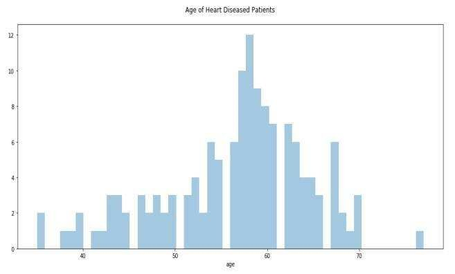
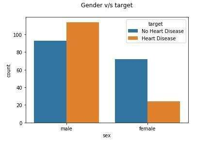
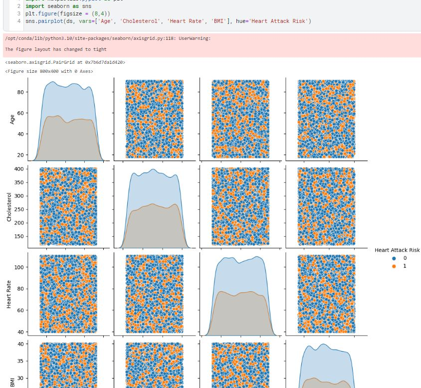

Plots
⚠️Aquests plots només els hem posat com a mostra. Tot i que podeu inspirar-vos en alguns, no cal que intenteu crear els mateixos. L'important és fer-se bones preguntes i bons gràfics.⚠️
Plot 1 Description
Countplot of gender attribute. This graph shows that men are more likely to have a heart disease than women.
🌍 Original source and examples, Kaggle website.🌍

Plot 2 Description
Displot of attribute age Fig. 2 depicts the distplot of age attribute. It clearly shows that heart disease risk is very common with the people whose age is 60 and above. The heart disease risk is common with the people who belong to the age group of 41 to 60 and rare with the people whose age is below 40.
🌍 Original source and examples, Kaggle website.🌍

Plot 3 Example
